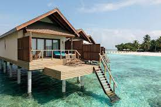
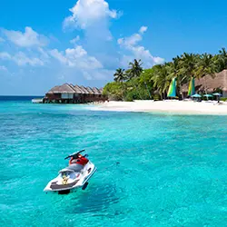
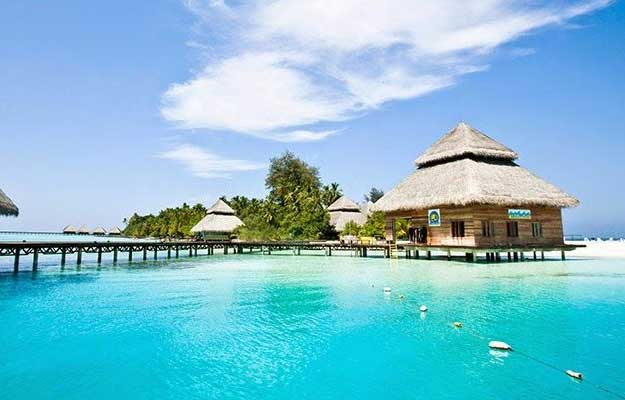
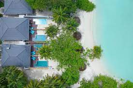
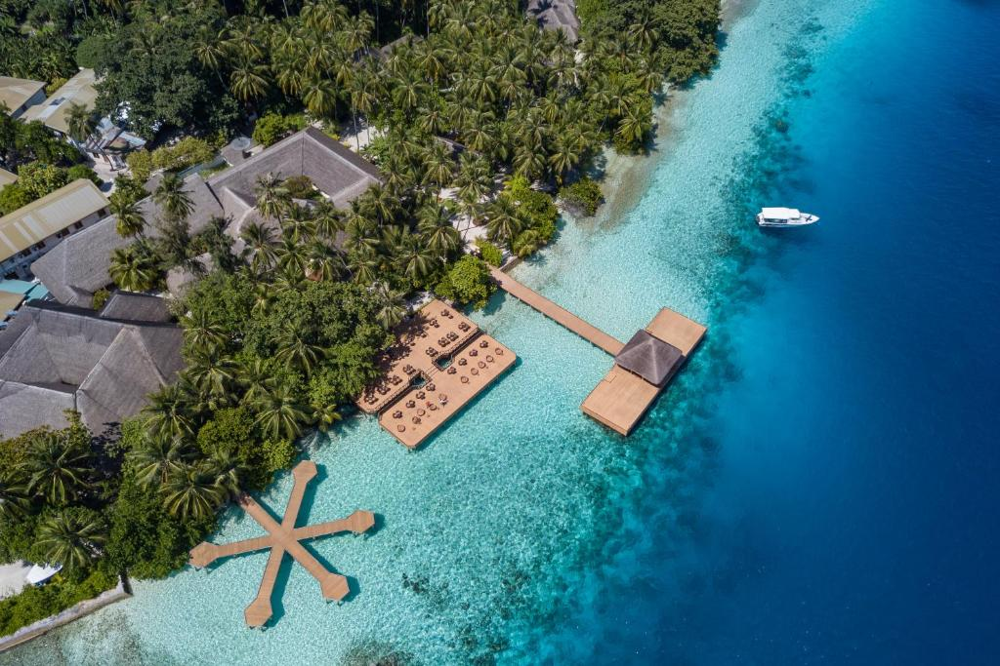

TourTube
A virtual Tour Guide, that make's your trip easier
About Maldives
Maldives officially the Republic of Maldives, is an archipelagic state in the Indian subcontinent of Asia, situated in the Indian Ocean. It lies southwest of Sri Lanka and India, about 750 kilometres (470 miles; 400 nautical miles) from the Asian continent's mainland.
The chain of 26 atolls stretches from Ihavandhippolhu Atoll in the north to Addu Atoll in the south (across the Equator). Comprising a territory spanning roughly 90,000 square kilometres (35,000 sq mi) including the sea, land area of all the islands comprises 298 square kilometres (115 sq mi), Maldives is one of the world's most geographically dispersed sovereign states as well as the smallest Asian country by land area and, with around 557,751 inhabitants, the 2nd least populous country in Asia.
Resorts in Maldivian Blue's
Lily Resorts (Maldives)
Location: Lily Beach Resort is based on the absolute flawless island in the Maldives. Guest can love the majestic experience isolation and serenity deliquesce in every whiff coming from window view. Guest can love the weather and sightseeing of the Maldives also they wanna visit here again and again. One can experience heaven like facilities and accommodation that offer by the hotel.
Hotel Facilities: The hotel administer elegant travel background by conducting the tours around this secluded island.
Reethi Beach Resorts (Maldives)


- Set amidst a beautiful lagoon, the resort has a PADI dive centre, tennis courts and a beachfront spa.
- The hotel staff speaks Hindi, making you feel at home in a new city!
- A short ferry ride to Hanifaru Bay Marine Protected Area and Dhigufaru Shark Feeding.
- The 9 in-house dining outlets include beach bars and private dining with your loved ones.
Location on Map:
Top places to try in Maldives!!
| 1. Atoll Transfer: |
 |  |
The first online Transfer booking provider based in Maldives. As we are connected partner to all Transfer service provider in Maldives. “No one knows Maldives Transfer bette, Due to COVID 19 all boat service subject to change the timing and cancellations. |
| 2. Male Atoll: |
 |
Male Atoll is the largest city in all of Maldives and holds quite a lot of importance. It is easily one of the best places to visit as it does have some really fun attractions. Interestingly, weather is one thing you won't complain about when it comes to this tropical paradise. The monsoon season is predominantly present throughout the year which makes it quite ideal. |
| 3. Maafushi Island: |
 |
One of the most famous places to visit in Maldives is the Maafushi island! Not only does it have fancy beaches with water sports galore but also offers exquisite food that you will thoroughly relish.
Things to do - Meet sharks and Manta Rays as you go shark diving, wear your best bikini and dive in at the bikini beach, do some island hopping from Maafushi and make the most of your time in this paradise. |
| 4. Biyadhoo Island: |
 |
Thanks to the full access of the island, Biyadhoo is considered to be the scuba-diver's island! Another interesting fact about this island is that it is owned and managed by the Taj group of Hospitality.
Things to do - You can indulge in a bunch of some water activities including windsurfing, surf ski paddling, canoeing, sailing and much more. With its abundance of tropical vegetation, you will always be hydrated with lovely banana shakes and coconut water! |
| 5. Sun Island: |
 |
Located in the South Ari Atoll is the beautiful Nalaguraidhoo Island, also known as Sun Island. Adorned with gorgeous tropical setting and blue waters, the island is too lovely for words. You will be smitten by its charm and luxe resorts. Quite an ideal place for you if you're going with a partner.
Things to do - Much like a majority of places to visit in Maldives, even at the Sun Island, you can enjoy some fun surfing, snorkelling, diving and once you're tired of all this, you can call it a day by chilling at the sauna and getting a good massage at a spa. |
| 6. Banana Reef: |
 |
Just as the name suggests, the reef is shaped like a banana and brims with exquisite marine life that you can witness as it provides one of the best diving experiences in Maldives. You will be amazed by the colours and vibrance of the island and the marine life it supports.
Things to do - The highlights of Maldives are that you can indulge in fun water sports from any place. The reef offers a beautiful marine ecosystem that you can explore as you dive underwater. You can further go over to places such as Maldive Victory, Hulhumal-, Alimatha Island, Biyadhoo Island, Manta Point to take in more of the magic. |
| 7. Baros Island: |
 |
Experience luxury at its best at Baros island. With tiny exquisite villas perched over a cyan blue lagoon, you'd be lost in its beauty throughout your stay. Honeymooners would have quite the time of their life here.
Things to do - Order some lovely sangrias, rest yourselves on a lounge chair or a hammock, sip your drink and marvel at the sparkling blue water and the posh treatment that you will receive. Make the most of their spas too. |
| 8. Alimatha Island: |
 |
Located at Vaavu Atoll, this island nestled on the edge of East Maldives is just perfect for diving enthusiasts. You can also do boating and playing volleyball by the beach while the white sand covers you! The place is also cool as it has some amazing massage centres, spa, bars and of course, the alluring beach with its Azure blue waters.
Things to do - Canoeing on the sparkling blue water is not just a dream away! You can actually take this up at Alimatha Island's Miyaru Kandu, Fotte Kandu 'cause the water is pristine blue and the ambiance, totally lush! Diving and snorkelling are other fun attractions that you can engage in as you go there. |
| 9. Artificial Beach: |
 |
Are you a carnival enthusiast? Do you like your trips to have some cultural pizzazz and young ambiance? The Artificial beach will give you an experience to remember! Located in North Mal-Atoll, the place is usually lit with a young crowd who wish to unwind and dive into the waves that hit the shore.
Things to do - Do you wish to spot sharks in the ocean? Well, here's your chance! At the Artificial beach, you'll be able to spot then at the Shark Point. You can also hang out at Manta Point, Nassimo Thila and Kani Corner. |
| 10. Fihalhohi Island |
 |
If you have an eye for the aesthetics then Fihalhohi Island will not let you down! With water as clear as the sky and beach adorned with palm trees, you'll be amazed by the beauty the island has in store. Another perk of Fihalhohi is the Balinese level of spa treatment that you'll get to experience.
Things to do - Beach hopping and other water activities can be taken up here. Since Rannalhi and Rihiveli beaches are closely located, you can easily hop around. |